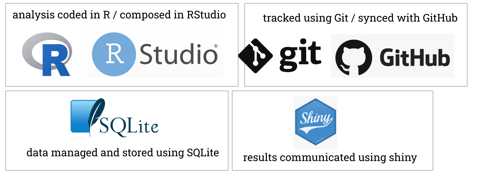

Chapter 3 Get set up with R, Rstudio, Git & Github

Making OHI+ assessments in the Baltic Sea requires coding and using data science software.
You can learn this in a fun and empowering way!
In the OHI Open Data Science training book you will learn a reproducible workflow with R, RStudio, Git, and GitHub.
But before the training, please make sure you have done the following:
- Download and install up-to-date versions of:
- R: https://cloud.r-project.org
- RStudio: http://www.rstudio.com/download
- Git: https://git-scm.com/downloads Note: open the download and follow normal install procedures on your computer but you won’t see any software installed when you’re done
- Create a GitHub account: https://github.com Note: shorter names can identify you are better, and use your work email!
- Get comfortable: if you’re not in a physical workshop, be set up with two screens if possible. You will be following along in RStudio on your own computer while also watching a virtual training or following this tutorial on your own.
Further Trainings and Learning
- OHI Intro to Data Science Training Youtube series, where you will learn more about collaborative tools.
- Swirl, where you can learn R programming and data science interactively, at your own pace, and right in the R console!
- Stat545, where you will explore, groom, visualize, and analyze data, make all of that reproducible, reusable, and shareable using R.
- R for Data Science, a book that will teach you how to do data science with R.
- Improving collaboration with Github, where you learn to use Github for communication and project management through GitHub Issues.
- Reproducible Research Techniques,to help researchers with good data science skills, share data with the scientific community effectively and efficiently, and benefit from the re-use of their data by others.